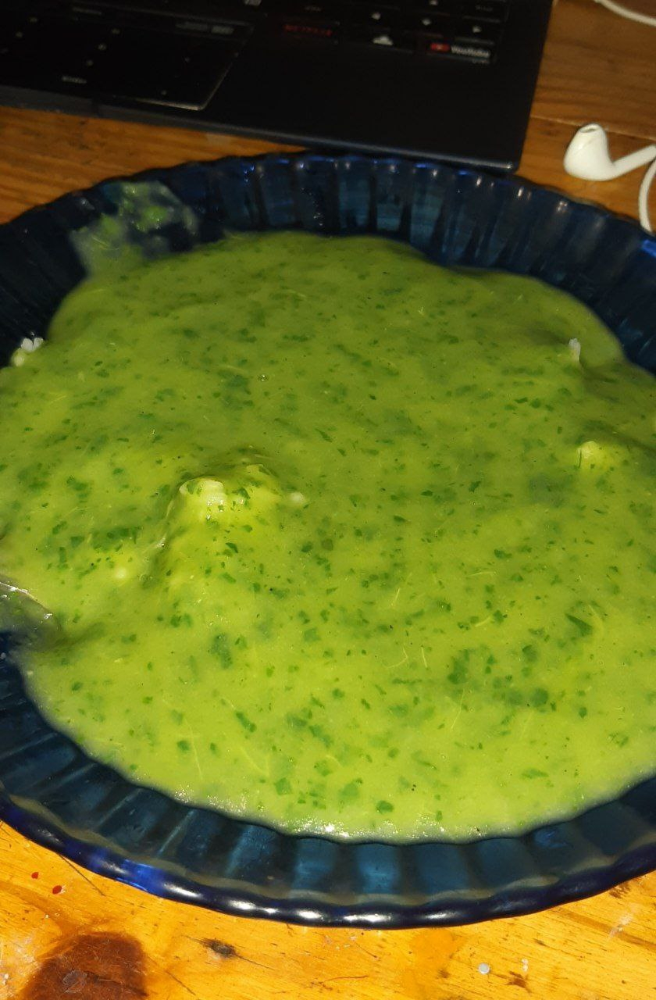
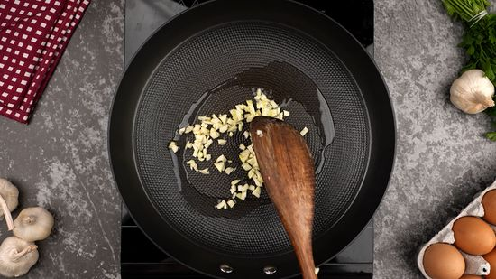
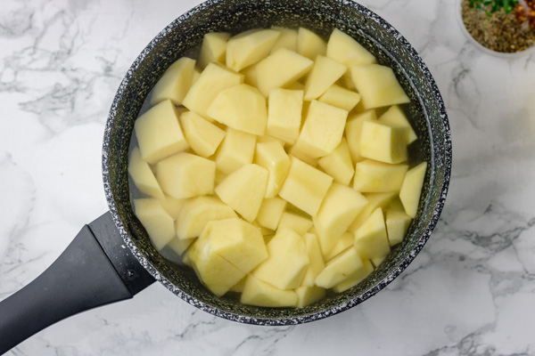
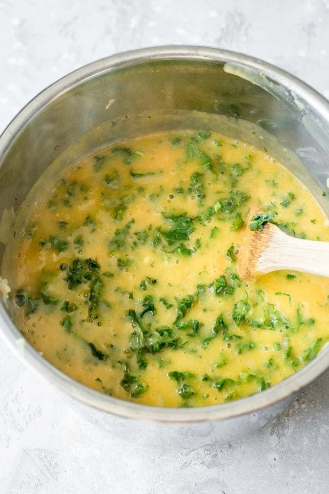
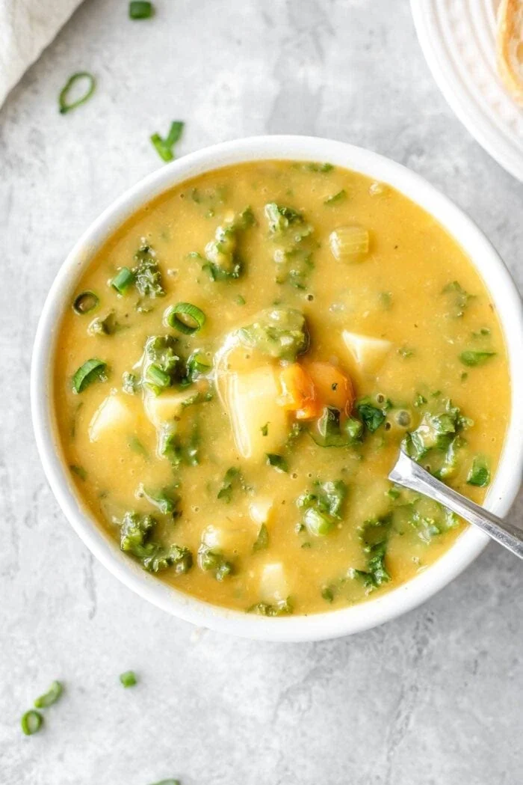
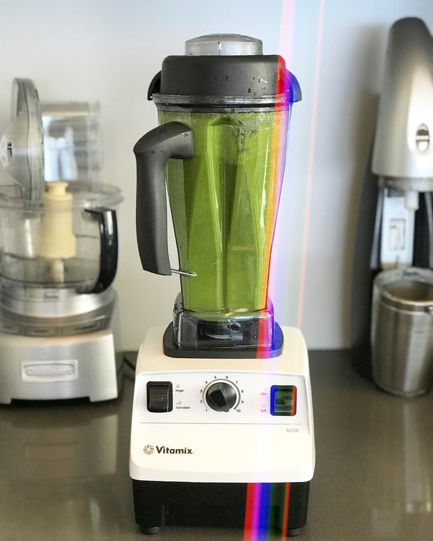

Kale Soup with Potatoes

A simple recipe with simple ingredients to delight in a simple way!
Ingredients (for one person)
- 6 medium potatoes peeled and chopped
- 1 bunch of washed and chopped kale
- ½ finely chopped onion
- ½ tablespoon of salt and chopped garlic
- 1 chicken bouillon
You can chop the potatoes and kale roughly, leaving large pieces.
Directions
- Put some oil in a pan.
add the onion, the garlic with salt and wait until the garlic is golden.

- Put the potatoes and fill with water.

- Add chicken bouillon and cover the pan.
leave the heat on high.
- When potatoes soften, add the kale.
and stir for approximately 1 minute until it wilts.

- Turn off the heat and cool the soup.

- After it cools, add to the blender and blend.

- Return the soup to the pot and add your preferred protein.